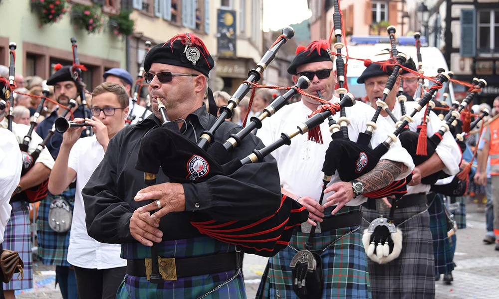

Discover Edinburgh’s Past
Edinburgh’s story stretches from ancient fortresses to Enlightenment thinkers. This page explores the key places, traditions, and historical influences that shaped the city into what it is today.
Edinburgh’s Old Town

The Old Town is the heart of Edinburgh’s medieval history. Its narrow closes, cobblestone paths, and ancient buildings have stood for centuries. Landmarks like the Royal Mile and Edinburgh Castle tell the story of kings, conflicts, and cultural traditions that shaped Scotland.
The Georgian New Town

Built in the late 1700s, the New Town represents Scotland’s Age of Enlightenment. Its grand squares and elegant stone terraces are considered some of the best urban designs in Europe. The contrast between Old Town and New Town is part of what makes Edinburgh a UNESCO World Heritage Site.
Listen to Scotland’s Heritage
Experience the atmosphere of Scotland’s past through this traditional Scottish tune.
Traditions & Culture
Scotland’s heritage goes beyond buildings and monuments—it includes music, festivals, storytelling, and identity. Traditions like ceilidh dancing, bagpipe music, tartans, and major annual events like Hogmanay and the Edinburgh Festival continue to shape Scottish culture.
Timeline Highlights
- 1130s
- Edinburgh grows as a royal burgh and becomes an important medieval stronghold.
- 1500s
- The Scottish Renaissance shapes culture, learning, and architecture.
- 1700s
- The Georgian New Town is built during Scotland’s Enlightenment era.
- 1995
- The Old Town and New Town are officially named a UNESCO World Heritage Site.